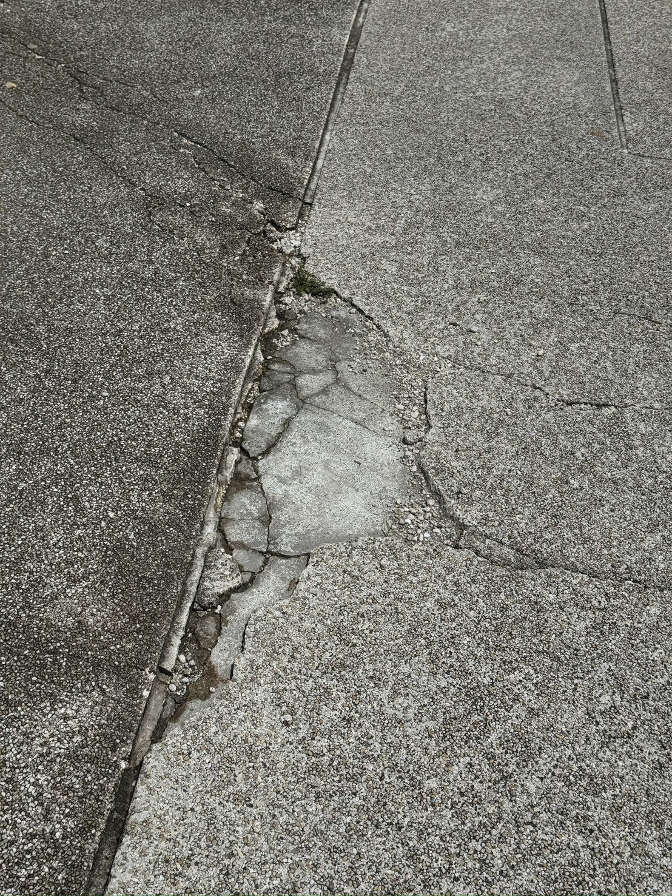

先確認安全
不要為了拍照停在危險位置；先保護自己，再記錄現場狀況。
NVD ACTION PROJECT
NVD 以恢恢尋路作為目前的行動工具，協助使用者記錄道路與空間阻礙；ROAD HUB 則示範這些觀察如何被整理成可理解、可追蹤、可討論的公共資料。
回報前準備
恢恢尋路是 NVD 目前用來記錄通行阻礙的行動工具，重點是拍照、定位、補充說明，把日常遇到的障礙整理成後續可討論的資料。
ROAD HUB 示範
流程體驗：目前此區不會傳送或保存資料，不會形成正式受理或正式回報，也不是政府通報管道。
ROAD HUB 是 NVD 官網中的資料整理示範，用來說明現場觀察如何被分類、統計與呈現；實際巡護與回報以前往恢恢尋路為主。

觀察資料只儲存在目前瀏覽器。
資料流轉中
現場觀察即時傳送至後台，轉化為可分析的公共資料NVD ROAD HUB 將道路觀察資料整理為障礙類型、區域分布、通行影響與改善優先參考，協助社區、校園與組織看見友善道路行動的資料價值。
剛剛新增
區域：三民區｜類型：人行道鋪面破損/碎裂｜影響：輪椅使用者、嬰兒車使用者、行人｜狀態：加入儀表板｜備註：此紀錄僅供流程預覽，未傳送、保存或正式受理。
本頁為 ROAD HUB 體驗版；觀察筆數僅儲存在目前瀏覽器，用於呈現資料累積效果，不代表正式受理數或政府案件紀錄。
資料不會傳送到伺服器，也不保存個人資料。想把這套流程帶進社區、校園或企業合作？ 聯絡 NVD：nvd20260611@gmail.com
新手巡護教學
先從安全、清楚、可回頭確認的紀錄開始，不需要一次完成所有資料。
不要為了拍照停在危險位置；先保護自己，再記錄現場狀況。
盡量包含障礙本身、周邊動線與可辨識的位置線索。
補充輪椅、嬰兒車、行人或高齡者通行時會遇到的具體困難。
從回報工具到公共資料
恢恢尋路協助記錄現場，ROAD HUB 示範資料如何被整理。NVD 更在意的是後續如何把同儕經驗、空間阻礙與工具使用回饋，轉化成社區、校園、企業與公共部門能一起討論的資料。
Friendly Tech Loop
NVD 不只保留回報結果，也把現場經驗整理成可被追蹤、可被討論、可被改善的公共資料。
從道路阻礙、通行風險與日常不便開始，讓真實需求被看見。
回饋被分類、標記與補充脈絡，才有機會成為公共討論的起點。
邀請居民、專業者、企業與公共部門共同參與，讓下一次通行更安全。